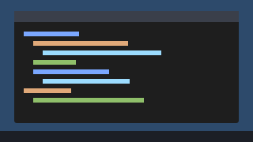

Colores
Leídos de tokens.css con el tema actual. El contraste AA lo verifica apps/teacher/sistema_test.go.
Tipografía
2xl · Estado vacío y asistentes
xl · Título de vista (h1)
lg · Título de panel (h2)
md · Texto base: claro, sin jerga y con el verbo de la acción.
sm · Ayudas y metadatos
xs · Insignias
mono · def factorial(n): return 1 if n <= 1 else n * factorial(n - 1)
Botones
Campos
Insignias de estado
Siempre con icono y texto: el color nunca va solo.
Tarjetas
Tarjeta con cabecera
-

LAB3-PC01ConectadoAna López · Ejercicio 3 -
DesconectadoLAB3-PC03DesconectadoDejó de responder a las 10:31
Tabla que pasa a tarjetas
Ancha: tabla. Contenedor angosto (menos de 40rem): tarjetas con etiquetas.
Avisos flotantes
Los de error se quedan hasta que se cierran; los demás se van a los 6 s.
Ver detalles
listen tcp :47830: bind: Only one usage of each socket address…
Franjas globales
Transmitiendo tu pantalla a 7 de 7 alumnos La ventana de Aula no aparece en la transmisión.
Reinicio pendiente en 2 equipos · el primero en 0:24
Aula simulada activa: 2 alumnos de prueba
Este equipo no tiene la clave del centro: los alumnos no reconocerán esta consola.¿Qué hago?
Aviso en línea
Dentro del contenido, con márgenes y esquinas redondeadas (p. ej., el aviso de privacidad de las miniaturas).
Información en línea.
Mientras ves las miniaturas, cada alumno tiene en su pantalla el aviso «Tu pantalla está siendo vista por el profesor».
Estos alumnos son de prueba.
Diálogo de confirmación
Título con verbo y número, consecuencia y botón con el mismo verbo. El foco empieza en «Volver».
Estado vacío con acción sugerida
Aún no hay alumnos en el canal 1
Los equipos del laboratorio aparecen aquí solos al encender Aula. Si en 1 minuto no aparece ninguno, revisemos juntos.
Carga
Abriendo el canal 1…
Pasos de asistente
- Hecho
- Falló: la red es PúblicaCámbiala a Privada en Configuración de Windows.
- Paso actual
- Pendiente
Bloque de código con «Copiar»
def factorial(n):
return 1 if n <= 1 else n * factorial(n - 1)
Visor de diagramas


Iconos
Leídos de iconos.svg. Uso: <svg class="icono"><use href="sistema/iconos.svg#id"/></svg>